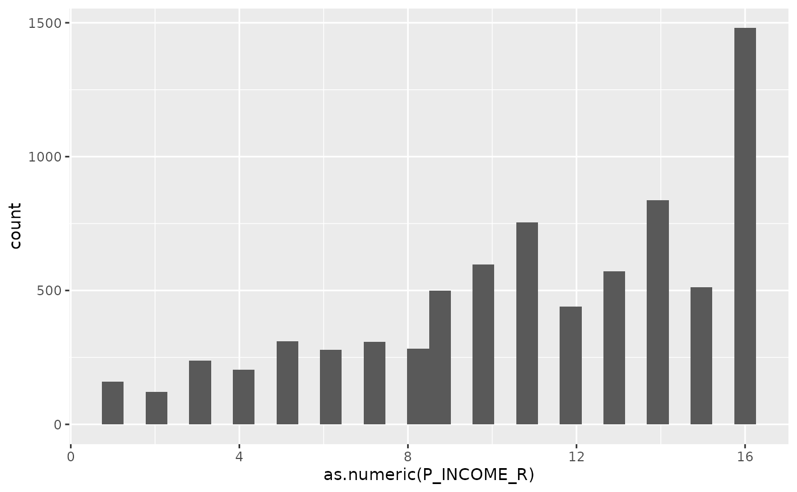
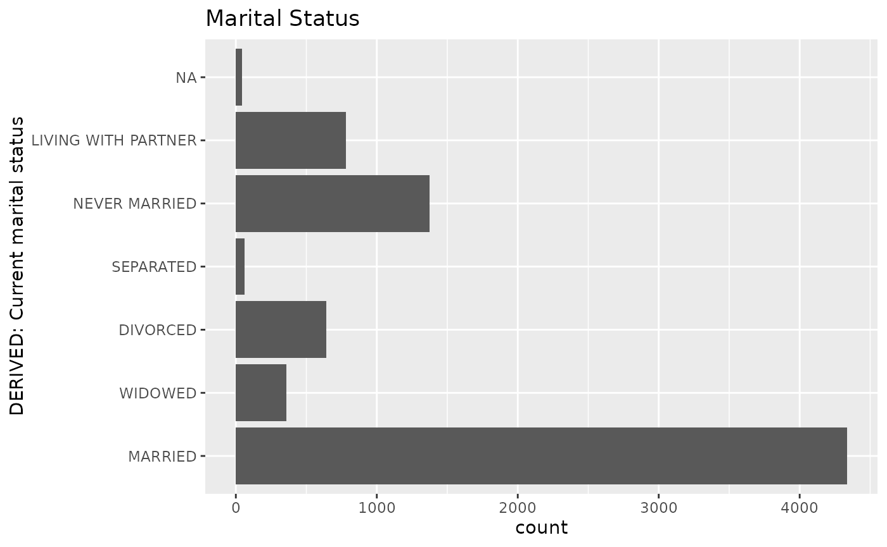

We can also make some simple bar charts to display these. (There are many types of plots but these are to get started.)
data_tabulate(rss1$HIS_GENERAL) |> plot() 
That’s a mess!
Fortunately, we can use some options from the ggplot2
package and some extra options.
data_tabulate(rss1$HIS_GENERAL) |>
plot(label_values = FALSE, error_bar = FALSE,
show_na = "never") +
coord_flip() +
labs(title = "Overall health")
data_tabulate(rss1$PAY_PAYWORRY) |>
plot(label_values = FALSE, error_bar = FALSE,
show_na = "never") +
coord_flip() +
labs(title = "Worried about pay if sick/injured") 
data_tabulate(rss1$MARSTAT) |>
plot(label_values = FALSE, error_bar = FALSE,
show_na = "never") +
coord_flip() +
labs(title = "Marital Status")
A histogram is one way to present a distribution of a numeric variable is using a histogram. For this example I will use full ggplot code.
ggplot(rss1, aes(as.numeric(P_INCOME_R))) +
geom_histogram()
#> `stat_bin()` using `bins = 30`. Pick better value `binwidth`.
Here is an example of the bar plot using ggplot.
ggplot(rss1, aes(MARSTAT)) +
geom_bar() +
coord_flip() +
labs(title = "Marital Status")
They definitely are more complex, but you also have a huge amount of flexibility. You can change colors,shapes, sizes and more.